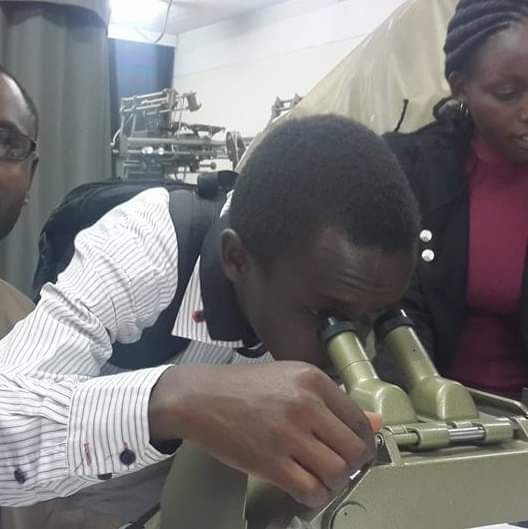

My Background
My background is a Bachelor's Degree in GIS from The Technical University of Kenya, and a topping Diploma in Full Stack Development from the Institute of Software Technologies, Parklands.
A mutual combination of the two sends my mind flying to explore rangelands of diverse wonders I can achieve!
